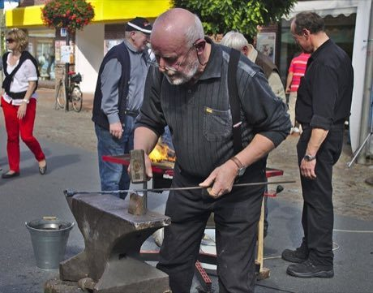

Home / Living Traditions / Celtic and Atlantic Europe
Playable heritage gameBlacksmith's Forge
Also known as Schmiedekunst · forging
A blacksmith heats an iron bar in the fire until it glows the right colour, then draws it out on the anvil with a steady rhythm of hammer blows. The same craft makes hooks, candlesticks, tools and blades across Europe, Japan and India.

How to play
- The outline beside the bar shows the shape to reach: a hook with its curled tip.
- Pump the bellows to heat the bar until the heat gauge sits in the lit working band.
- Carry the bar to the anvil and strike it on the beat; heavy blows draw the iron out and make it longer, light blows finish it.
- Switch to Bend and strike again to turn the hot tip over the anvil. When the iron cools, return it to the fire; if it turns white it burns. Press Check when the bar matches the outline.
Rules at a glance
- Iron moves only while it is hot: cherry red and brighter. Cold iron barely changes shape.
- Blows land at full strength only on the beat; off-beat blows are weaker.
- A thin place is longer than a thick one: drawing the iron out lengthens the bar.
- In Bend mode each blow turns the hot bar a little over the anvil; the hook is judged on both its shape and its curl.
- Iron held white-hot burns and loses metal, and each burn costs 8 points. Three stars need a close match.
About the tradition
Smiths in Britain, Germany and Sweden, in Japan and in India have shaped iron by fire and hammer for centuries, and the craft is still practised in village forges and workshops. The glow of the metal tells the smith when it is ready to work.
Origins
A living tradition passed from person to person; it is not tied to a single dated origin. It belongs to the cultural world of Celtic and Atlantic Europe.
Credits
- Craft model: World Heritage Games (original)
- Photo: Jacek Rużyczka, CC BY-SA 4.0, source on Wikimedia Commons
- Text: CC BY-SA 4.0, World Heritage Games.
Sources

Get the app
Blacksmith's Forge is one of 13 woodcraft and metal crafts in the Woodcraft & Metal of the World app for Android. Submitted to Google Play; in review. Store links appear here the day it goes live. One app, many traditions, no account needed.
More games to play

Welsh Love Spoon Carving
United Kingdom · Crafts and makingPlay preview · in the Woodcraft & Metal of the World app


Lost-Wax Bronze Casting
Japan +2 · Crafts and makingPlay preview · in the Craft Designs of the World app
Jaipur blue pottery painting
India · Crafts and makingPlay preview · in the Tiles & Pottery of the World app
Tessellated Mosaic Making
Italy +1 · Crafts and makingPlay preview · in the Craft Designs of the World app
More from United Kingdom

Antigua Classic Yacht Race
Antigua and Barbuda +1 · Racing
Bagatelle
France +1 · Dexterity and skill games
Bat and Trap
United Kingdom · Dexterity and skill games
Bridge Stick Race
United Kingdom · Toys
Broderie anglaise
United Kingdom · Crafts and makingPlay preview · in the Stitch & Thread of the World app